Identity Security Engineer, IdentityIQ
Introduction: 12 topics / 62 original images. Essentials: 6 modules / 49 handout page illustrations. The whole path remains incomplete.
English study notes in course order, with diagrams and examples beside their explanations. Select an illustration to open its full local image. No internet connection is required for the saved notes and media.
1. Course Overview
IdentityIQ is SailPoint's enterprise identity-security solution for environments that need control over their deployment and detailed integration with existing applications. This introductory course establishes the vocabulary and capabilities that technical implementers and administrators will use in later training.
The course first explains IdentityIQ and its identity-centered data model, then develops requests, event-driven provisioning, certifications, policies, analytics, roles and extension options. The final topic points to additional training and documentation.
The course's introductory list summarizes ten subject areas, while its navigation contains twelve topics because Course Overview and Interacting with Course Content are separate entries. This study book follows the navigation's full twelve-topic sequence.

Navigation at the top and bottom moves between topics. The displayed illustrations belong to the viewed course version; this book reorganizes the content into a continuous reading layout.
2. Interacting with Course Content
The original course combines text, expandable images, video demonstrations, interactive explanations and unscored review questions. Identity University tracks reading progress and resumes at the previous position.

The navigation menu allows movement between topics and displays completion checkmarks and a percentage.

For offline study, the available explanations are expanded into paragraphs and the retained illustrations can be opened at a larger size. Executable exercises, LMS tracking and video playback are not reproduced. A knowledge-check feedback label visible in the source does not represent an answer submitted while preparing these notes.
3. Introducing IdentityIQ
Identity security in a complex enterprise
IdentityIQ combines visibility into identities and access, application integration, access-change automation and governance. Its value depends on bringing trustworthy information from the enterprise into one manageable model.

Benefits: three flashcards expanded
Central visibility helps identify inappropriate access, policy violations and weaknesses in access controls.
Repeatable reviews and records help organizations demonstrate their security and privacy controls. The course mentions HIPAA and GDPR as examples of regulatory contexts; it does not establish that using the product alone guarantees compliance.

Timely access helps new workers become productive. Automation reduces repetitive administration and supports consistent service delivery.

Core modules and integrated solutions
Compliance Manager and Lifecycle Manager are IdentityIQ modules. They share collected application-access information in the IdentityIQ database, the user interface and the implementation foundation.
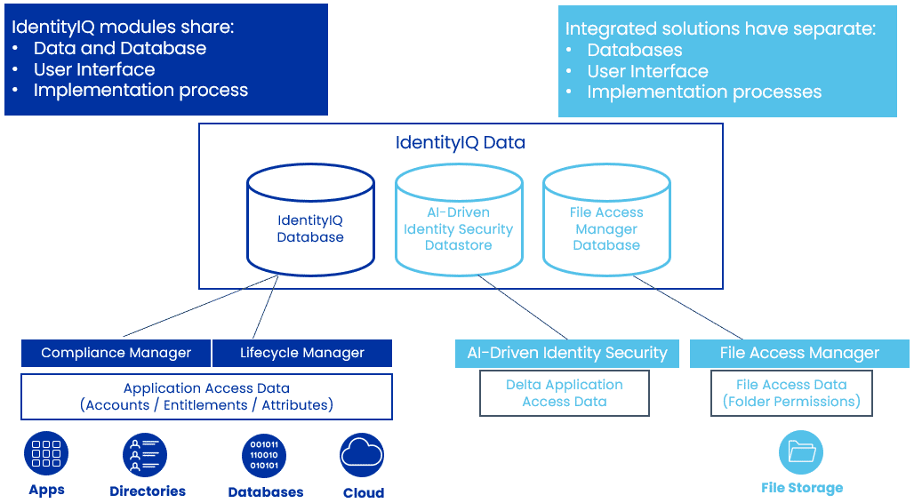
File Access Manager and AI-Driven Identity Security are separate solutions that can integrate with IdentityIQ. They have their own storage, interfaces and implementation work. AI services add machine-learning-based insight into access. File Access Manager concerns unstructured data, including file and folder permissions and sensitive-data visibility.
Lifecycle Manager
Lifecycle Manager handles self-service access requests, configurable approvals, preventative policy checks and lifecycle events as people join, move or leave. Batch operations support changes for groups, such as removing access to a retired application or granting access after a merger.

Provisioning sends approved changes to connected applications and confirms the resulting access. The business model and workflow configuration determine how those requests are handled.
Compliance Manager
Compliance Manager supports periodic certifications and policy scanning. Managers or data owners review whether existing access remains necessary. Policy detection identifies access that conflicts with business rules.

Deployment options
A deployment in the organization's own data center gives its team control and operational responsibility for IdentityIQ.

A public-cloud deployment moves infrastructure to a cloud consumption model, with AWS and Azure used as examples. The organization still needs a team to operate IdentityIQ; hosting it in a cloud does not by itself turn it into a provider-managed SaaS service.
A managed-service deployment places infrastructure and IdentityIQ administration with a service provider. The model suits organizations that need the product's flexibility but do not operate all of it internally.

Review: distinguish a core IdentityIQ module, a separately integrated solution and a deployment arrangement. These are different decisions.
4. Identities: Core of Security
Identity cubes
An identity represents a subject with enterprise access: an employee, contractor, partner or non-human user. The identity cube brings together that subject's descriptive attributes, accounts and access information.

The three vocabulary cards distinguish the following concepts.
An attribute is a property of an identity, account, application or entitlement. Attribute values can drive decisions; location may influence access, for example.
An entitlement describes the permission held when an account uses an application.
Aggregation reads information from applications. Periodic aggregation keeps identity information aligned with the enterprise's current records.

Aggregation and correlation
Governance starts with integrated, normalized data. Aggregation collects it; correlation rules match each application's records to the correct identity cube. Collecting an account and identifying its owner are related but distinct tasks.

A common foundation for governance and lifecycle changes
The normalized identity model supports roles and policies. Compliance Manager uses that model to help confirm that people hold appropriate access.

Lifecycle Manager uses the same foundation when managing changes over time. New access decisions are evaluated in the context of the business model and existing access.
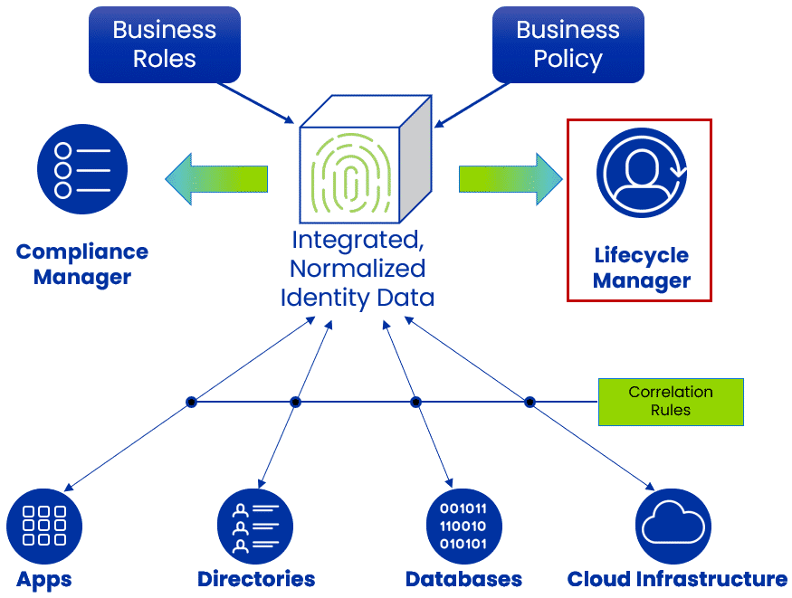
Review: an identity cube is the central representation of a subject, rather than a single application account. Data quality and correct correlation affect both review and automation.
5. Access Requests
Request access within the business model
Lifecycle Manager allows additions and removals of roles and entitlements. Administrators decide what is requestable and who may act for whom. Self-service and automated provisioning reduce routine work, while targeted approval and manual-provisioning tasks support situations requiring a person to act.

Demonstration coverage
The source contains an approximately five-minute-thirty-seven-second demonstration of a manager requesting access. English captions were available in the player. A complete caption transcript was not obtained through the exposed browser controls, so this book does not claim to reproduce the video's narration or every action shown. The page's accompanying five-step process is expanded below.
The five process markers

1. Start the request. The requester signs in and selects the kind of request. Their configured status and permissions determine whether they can act for themselves or another person.
2. Filter the available access. Requestability flags limit what can be selected. Implementation-specific rules can further restrict the choices visible to the requester.
3. Select and submit. Provide the information required for the request type, including the desired access where relevant, and submit it through the course example's interface.
4. Build a provisioning plan. Submission represents the requested changes in a provisioning plan and starts the appropriate workflow.
5. Process the workflow. The workflow determines policy evaluation, approval handling and the path into provisioning.
Configuration decisions
Decide whether managers can request for anyone or only direct reports, which self-service changes are permitted, and whom the helpdesk can assist. Select the processing workflow for each request type. IdentityIQ provides default settings and workflows, which an implementation can configure for its needs.
Missing material at this point: the full video, narration transcript and any video-only screen details are not included. The two page illustrations and all five marker explanations were retained.
6. Event-Driven Provisioning
Event-driven provisioning automatically keeps access aligned with changes in a subject's job or organizational relationship. It can grant necessary access, change existing access and remove rights that no longer apply.
Three process accordions expanded
IdentityIQ monitors identity information for changes or events.
When an event is detected, it can initiate provisioning. A department attribute changing is the course's example.
The configured actions are written to target systems. Access dependent on the old department can be removed as part of that response.

Lifecycle events and Rapid Setup
Lifecycle events describe common employment changes. Joiners enter the organization, movers change attributes such as job, department or location, and leavers depart. Rapid Setup provides preconfigured processes to streamline these events.
The event must be represented in data and connected to a configured response. A business fact matters to automation when the implementation knows how to recognize and handle it.
7. Certification and Access Reviews
Certification reviews existing access on enterprise systems. A certifier can be a manager or an application or entitlement owner. The reviewer decides whether the current access remains appropriate; the role is not always performed by the person's manager.
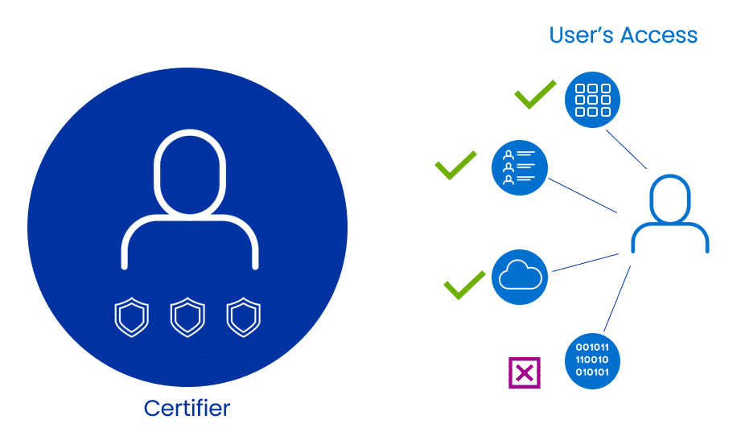
Reviews should recur on a schedule suited to the organization, with quarterly and annual reviews given as examples.
The manager-certification timeline
1. Define the campaign. A compliance officer configures the population, reviewers, start date, duration and other milestones. The example asks managers to review their direct reports.
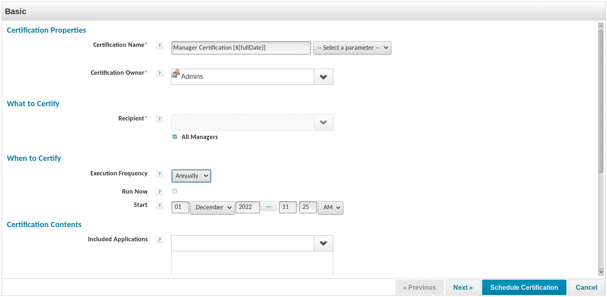
2. Compile the data. IdentityIQ gathers identities, accounts and access information. Generation time depends on campaign size and complexity and can range from minutes to much longer periods.
3. Create individual access reviews. Each designated certifier receives review work, with notifications when configured. The course gives two or four weeks as example review windows.
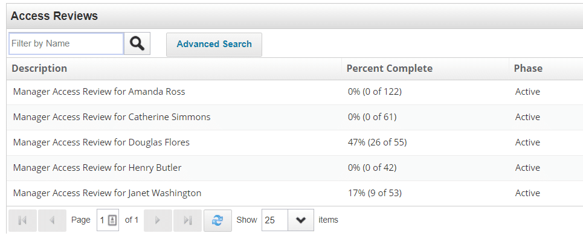
4. Make decisions. Managers approve or revoke access for the reviewed users. An integrated AI recommendation service can provide peer-based suggestions, but the review still requires a decision.

5. Challenge, sign off and revoke. An optional challenge phase allows affected users to dispute a removal. Certifiers can reconsider before final sign-off. IdentityIQ then begins the required revocation process.
Review: a campaign organizes the work; an access review is an individual reviewer's task. Recording a decision and executing the removal are different stages.
8. Policies
Define undesirable conditions
An IdentityIQ policy describes access conditions the organization does not want. It can be used to examine existing access or evaluate a proposed change.
Separation of Duties policies detect incompatible responsibilities. The example combines the ability to approve new vendors with the ability to pay them, creating an opportunity for one person to control too much of the transaction.
Dormant accounts are another concern. Unused accounts may incur costs and can remain compromised without an active user noticing.

A further example detects non-managers holding management-level application access.
Detective and preventative use
Detective checking examines access already present. Preventative evaluation checks proposed changes against existing rights and policy before the request is fulfilled. The precise response depends on configuration; detection should not be interpreted as a guarantee that every violation is automatically removed.
Video gap: the source includes two demonstrations under Detective and Preventative Policy Usage. Neither video nor its complete narration transcript is preserved here. The page's written explanations and illustrations are included.
Act on a violation
The violation owner receives work to review the issue. Depending on the violation, actions can include allowing an exception, correcting it, or having an administrator initiate a broader certification of the identity.

An SoD violation can offer Revoke, allowing the owner to choose which conflicting access to remove.
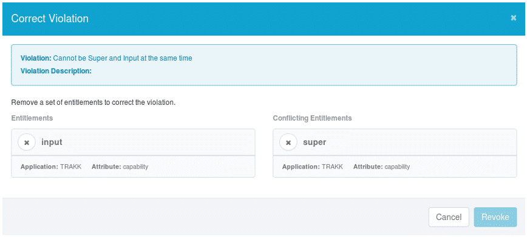
The purpose is to assign awareness and responsibility, including when resolution requires action outside IdentityIQ. A time-limited exception can permit the condition temporarily; it is flagged again after expiry if still present.
9. Analytics and Reports
Advanced Analytics
Advanced Analytics searches the IdentityIQ database. Available search fields depend on configuration, including which attributes have been designated searchable. Identity search is common, but the course also lists activity, role, entitlement and audit searches.
Results can be viewed, saved as a query, saved as a report or exported to CSV. A configured extended attribute can be searchable; searching is not restricted to only the standard predefined identity attributes.
Video gap: the Identity Search demonstration is not transcribed or saved in this edition. Its written introduction and original search screenshot are retained.
Reports
The course describes more than fifty standard reports grouped by category. They support compliance visibility and operational decisions and can be run as provided or configured for the organization's needs. The number is a statement from the viewed course version.

My Reports concerns configured reports and searches saved as reports, rather than only custom report definitions or every accessible report template.
Video gap: the Reports demonstration is not transcribed or saved. The page's report-category illustration is included.
10. Roles
Group access to improve decisions
A role packages entitlements into a manageable object. Roles are optional, but can make requests, approvals and reviews more efficient and less error-prone.
Instead of repeatedly selecting the individual rights for email, a company directory and other baseline applications, the example bundles them into one employee role. Maintaining the role updates the definition of that access grouping.

Catherine's Prism example: all four tabs
Catherine manages five people who need to manage technicians in Prism. She requests access for the team.

She knows the team needs Approvals, Cycle, Manager and Level 2, but assumes that Super is also necessary.
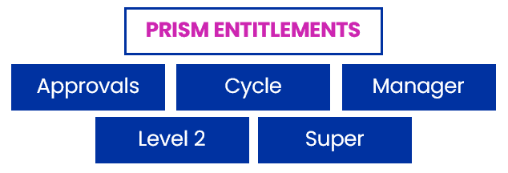
A cursory approval gives all five people excessive access. The problem is an inaccurate understanding of the required entitlement set.
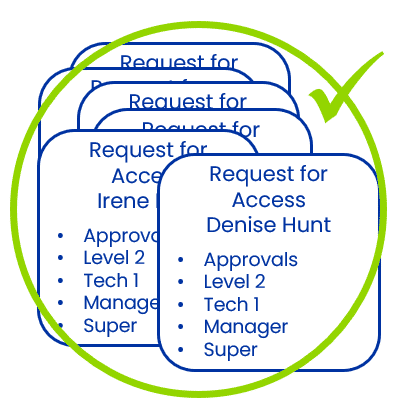
A well-defined, clearly named role packages the necessary rights so Catherine and the approver do not need to guess at individual technical permissions.
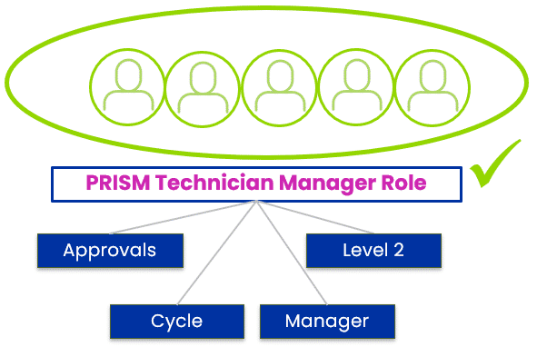
Automatic assignment and removal
Assignment rules can match identity attributes such as department or job title. The course illustrates finance access assigned through such a match.
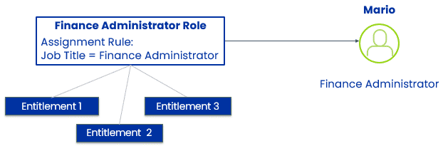
When a relevant attribute changes and the person no longer meets the rule, IdentityIQ can remove the role and the associated entitlements according to the implementation's provisioning configuration.
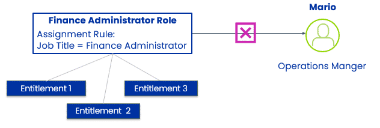
Build the role model with the business
Business analysts, application owners and business teams should jointly define roles. IdentityIQ supports Entitlement Analysis, IT Role Mining and Business Role Mining, as well as manual role creation. Mining results can be exported for analysis outside the product, and workshops or spreadsheets can support the business design.

Review: role analysis proposes a useful grouping; business ownership establishes whether that grouping is appropriate.
11. Extending IdentityIQ
Five extension levels: flashcards expanded
An implementation can add extended attributes such as department, location and job title to carry the organization's required context.

Rules insert custom logic at supported points. Branding adapts the interface's colors and logos.
Custom workflows support business processes beyond the configuration of the provided workflows.

Custom QuickLinks can start workflows for organization-specific actions.
Custom connectors may be needed for specialized or internally developed applications. The course's statement that SailPoint provides over one hundred connectors describes its viewed version rather than a current catalog count.
Standard and extended attributes
Standard identity-cube attributes are included by the product. Extended attributes add implementation-specific information, such as employee number, department or title. Those values can drive provisioning, policy evaluation and automation.

Designating an extended attribute as searchable makes it available in relevant search, filter and reporting options.
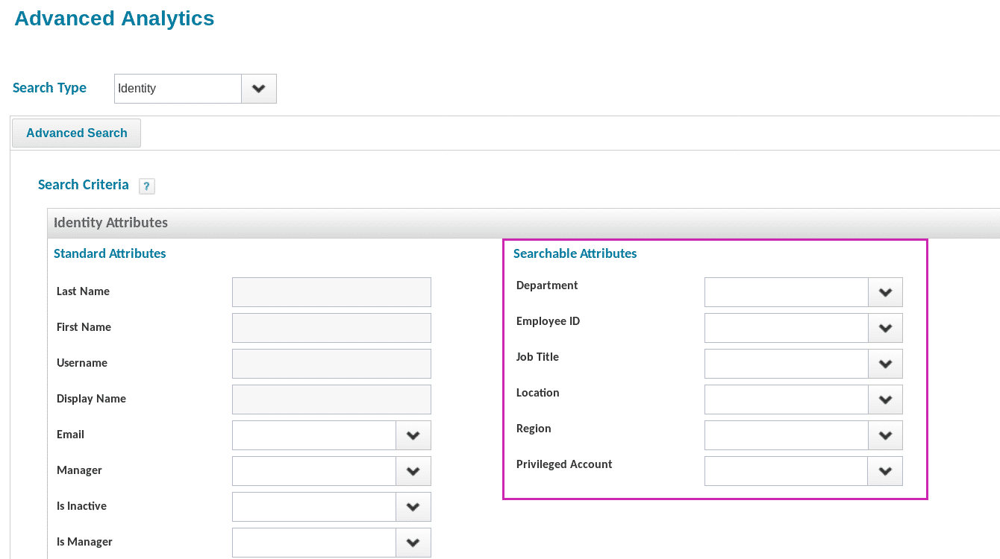
The lesson lists six object categories supporting extensions: identity cubes, entitlements, roles, applications, accounts and certifications. Its application example adds classifications for SOX regulation and sensitive information.
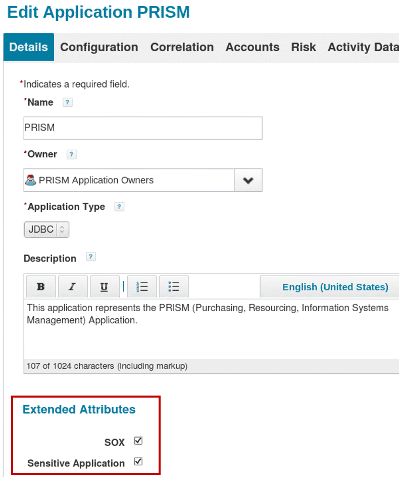
Matching and conditional logic
Employee number can correlate accounts with identities. An attribute-defined team-lead population can be permitted to request access for others. A Teller job title can trigger role assignment, and department/title changes can start a review or another business process.

Attributes can also restrict a batch job's population, require extra approvals for sensitive access or select different provisioning sets for employees and contractors.

Plugins
Plugins add functionality to the existing product. The course describes a SailPoint support plugin that packages diagnostic information and a SQL Browser Tool providing administrators with read-only database inspection. It points to community and partner sources for plugins. No plugin or software package was downloaded or executed while creating these notes.
12. Next Steps
The course points technical implementers and administrators to IdentityIQ Essentials next, followed by deeper implementation training. Business administrators have separate function-focused learning options.

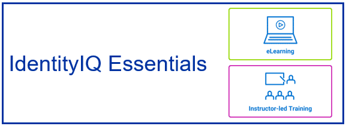
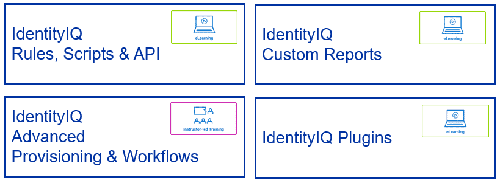
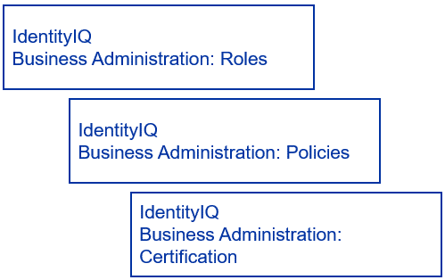
Useful external references include the IdentityIQ Help Center, Lifecycle Manager, Compliance Manager, certifications, Advanced Analytics and reporting.
The SailPoint Community supports questions, peer discussion and ideas. These links are preserved as external references; the linked documentation and other courses are not represented as captured content in this Introduction chapter.
Coverage and missing material
All twelve topic bodies were inspected. The available flashcard explanations, five access-request markers, three event-driven provisioning accordions, the certification timeline and four role-example tabs are represented in expanded study prose. All sixty-two inline image URLs encountered were downloaded and placed beside their topics, with source URLs and hashes recorded in saved-assets.json.
Five demonstration videos are not saved or fully transcribed: Access Requests; the two policy-use demonstrations; Identity Search; and Reports. English captions were observed on the Access Requests player, but its complete caption track was not exposed through the inspected browser controls. Five video-poster background files were also not saved; their exact paths are listed in coverage.json. No complete original audiovisual equivalent is claimed.
The original review questions and executable activities are not reproduced as completed assessments. No quiz was answered or reset. The source course had pre-existing completed topics and feedback states. Reading may update normal LMS progress. No live IdentityIQ tenant, lab, account, workflow, role, policy or certification decision was changed.
This is the first compiled course in the five-course learning path. Essentials, Rules/Scripts/API and Custom Reports remain pending study chapters. Advanced Provisioning and Workflows is gated by an IdentityIQ Essentials completion prerequisite; its visible outline is recorded separately, without bypassing the gate.
1. Course Overview
Purpose and audience
Essentials prepares technical implementers, customer and partner teams, and system administrators to participate in IdentityIQ implementations and ongoing administration. It builds on IdentityIQ Introduction, moving from feature awareness into application configuration, data loading, governance, provisioning and diagnosis.
By the end of the course, learners are expected to define applications that read enterprise data and send changes back to connected systems; configure schemas and custom attributes; load identities, accounts and entitlements; and link accounts to the appropriate owners. They also learn to configure lifecycle automation and user access requests and to monitor their results.
The course introduces several tools with different purposes: the browser-based Administrator Console, Advanced Analytics, the command-line IdentityIQ Console, Debug pages, task results and logs. Knowing where a problem is occurring matters as much as knowing which configuration to change.
Why this sequence matters
The lesson sequence follows an implementation dependency chain. Establish the platform, bring in authoritative identity information, organize identities, add other application accounts, and validate data. Governance and provisioning then operate on that foundation. Automating decisions before confirming the underlying identity and access data would automate the same data errors.
The simulated project has three broad stages:
- Build the identity and access picture. Configure authoritative applications, aggregate data, map identity attributes and run refreshes. Organize identities by responsibility, grant the appropriate IdentityIQ capabilities, onboard additional applications and correlate their accounts.
- Improve control of the information. Inspect data quality, oversee system operation, configure policies and certifications, and model access using roles.
- Manage changes. Prepare applications for provisioning, configure joiner/mover/leaver behavior, allow appropriate user requests, and test both automated and request-driven changes.
System administration runs throughout these stages. Task scheduling, errors, audit events, log output and retention settings continue to matter after implementation.
Learning environment and supporting material
The course supplies slides, exercise instructions and a Linux virtual machine. The guide's appendix includes a vocabulary cross-reference between business-facing names and internal object names, Linux command references, manual installation and patch instructions, and a Lab Reset tool reference.
The VM already has IdentityIQ installed. Manual installation is presented for understanding and optional later practice. Lab Reset can replace exercise state, return to a clean starting point or remove the training database; the notes record its purpose, but no reset or VM operation was performed during preparation.
Source coverage: the 6:39 Course Overview video's caption-search results were read. Its narration has been incorporated here. This module has no matching section in the provided presentation handout, which starts with Technical Overview. Video footage and original on-screen frames for Module 1 were not saved.
2. IdentityIQ Technical Overview
The identity and application model


An Identity Cube represents a managed person. Reading information into IdentityIQ is aggregation, and a connected source is represented by an Application object. An authoritative application, or system of record, supplies the identities that IdentityIQ should manage. This might be HR, Active Directory or another appropriate source, depending on the organization's design.
An Identity Cube brings together two different kinds of information. Identity attributes describe the person, such as an identifier, name or email address. Account attributes describe that person's account on a particular application and follow that application's schema. An entitlement describes a right available through an account, such as permission to approve purchase orders.
As applications are aggregated, account and entitlement information is associated with the relevant Identity Cubes. Available access rights are also represented in the Entitlement Catalog, organized by application. The catalog describes the access that exists; an individual's Cube describes the access associated with that person.
Business modeling
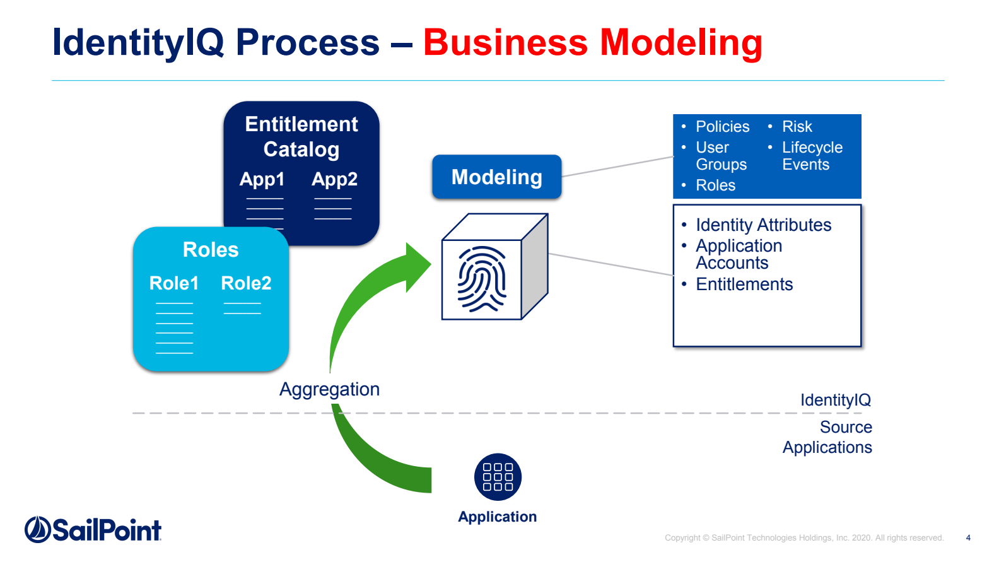
The data becomes useful for governance when the business defines what appropriate access looks like. Policies might prohibit a person from both approving and paying a vendor, or identify accounts unused for 180 days. These are examples from the course, rather than universal policy settings.
People can be grouped by their IdentityIQ responsibilities or enterprise access needs. A technical implementer and a business analyst may require different rights within IdentityIQ. Enterprise roles model responsibilities such as bank teller and group the permissions required for that job.
A risk model assigns numerical values to relevant access and other factors, producing a score that helps prioritize attention. Lifecycle-event definitions describe what counts as a joiner, mover or leaver and what should happen when such a change is detected.
Aggregation, refresh and certification
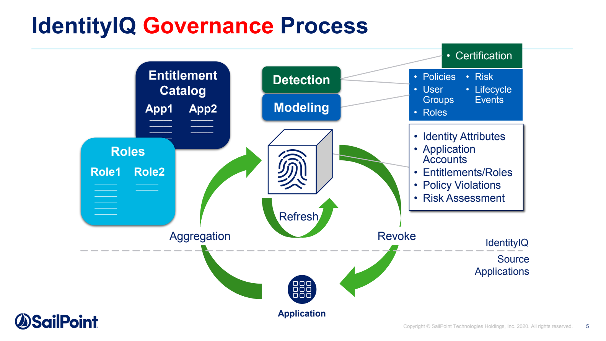
Aggregation reads external information; refresh computes information about identities. A refresh can evaluate policy violations, calculate risk, detect or assign roles, and process lifecycle events, according to its configuration. Aggregation and refresh are related operations with distinct responsibilities.
Certification asks an accountable reviewer, often a manager, whether a person's access is appropriate. The reviewer approves access that should remain or requests revocation. Policy remediation and certification decisions can lead to manual work items or automatic removal where the application's integration supports it and is configured accordingly.
Request-driven provisioning
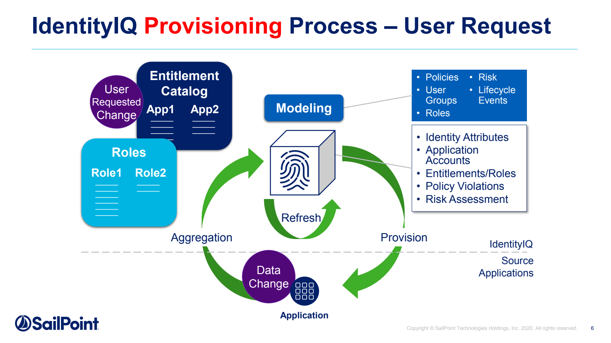
The narration's example is a request for the Time Sheet Approver entitlement. The user searches the access items they are allowed to request and submits the selection. A workflow handles the request, potentially collecting approvals and identifying policy violations before fulfillment.
If the request proceeds, IdentityIQ changes the target application through the configured provisioning path. Some integrations can execute the change automatically; others send a work item for a person to perform it. The desired access change and its actual implementation are separate facts.
IdentityIQ subsequently aggregates to confirm the target state. Depending on the connector, this can be a targeted read for the affected account or must wait for a later bulk aggregation. A refresh then recalculates the identity's picture using the newly observed information.
Event-driven provisioning

Requests are not the only trigger. When an employee is added to HR, aggregation can bring that person into IdentityIQ. The configured joiner-processing path can then provision the baseline, or birthright, accounts and entitlements that the employee needs. The business defines both the event criteria and the resulting access.
A useful study sequence is: read → correlate and model → calculate → decide → change → confirm. This is a reading aid summarizing the processes above, not an additional named product feature.
The handout ends this section with a Knowledge Check title slide. No assessment questions or answers are included here.
3. IdentityIQ Functional Elements

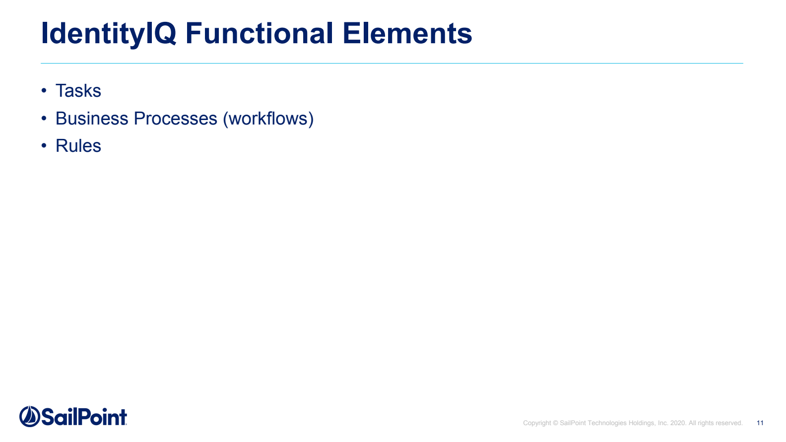
Objects and the components that act on them


IdentityIQ uses an object-oriented model. Identities, roles, applications, certifications, tasks and workflows are represented as objects persisted in the database. The course emphasizes using object methods when writing code against IdentityIQ, rather than treating customization as direct manipulation of database tables.
Objects hold configuration or state. Tasks and business processes perform work against those objects. For example, an Application object describes how a source is configured; an aggregation task uses that definition to read the source. A provisioning business process coordinates the work required when a user requests access.
Tasks
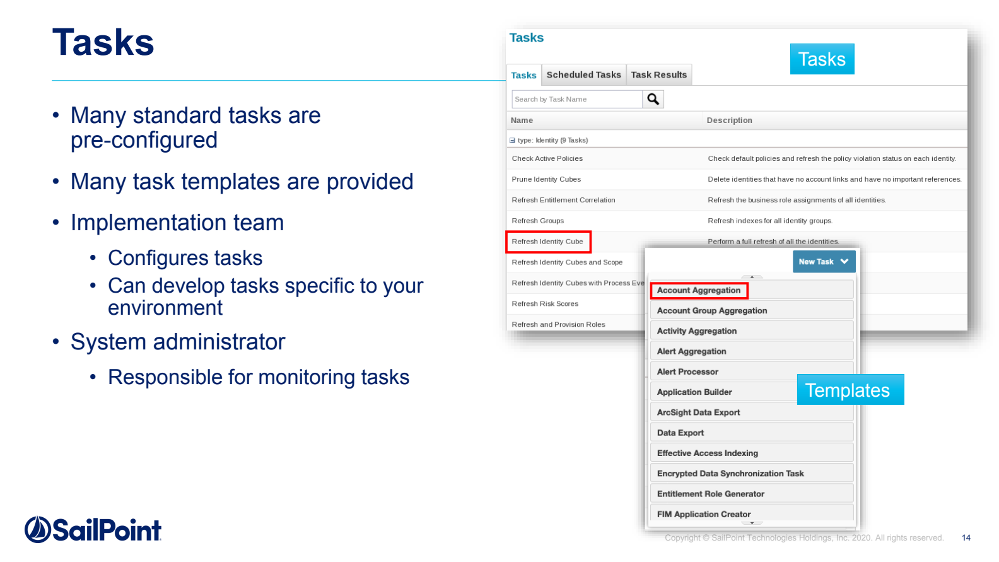
A task is a background or batch operation that runs without an interactive conversation with a user. A person can launch it manually or configure a schedule. Aggregation and identity refresh are typical examples.
IdentityIQ includes predefined tasks and task templates. The implementation team decides which tasks are required, configures existing definitions or creates additional ones, and selects appropriate schedules. The administrator checks that the tasks run when expected and investigates failures and errors. A configured schedule alone is not evidence of a successful run.
Business processes and workflows
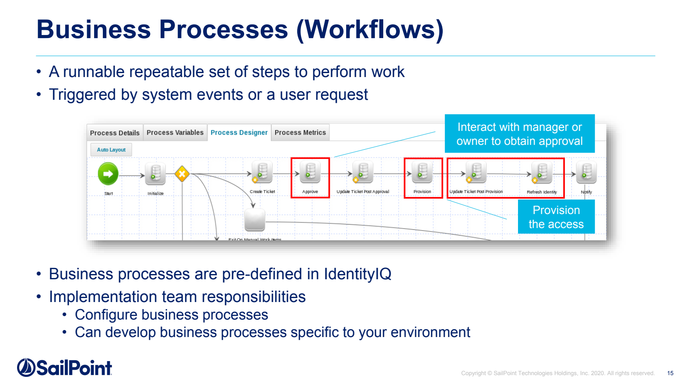
Business process and workflow refer to the same underlying concept. Business-facing screens generally use the former wording; implementation tools and object definitions often use the latter.
A workflow is an executable sequence of steps triggered by an event or request. Unlike a batch task, it often interacts with people to collect data or obtain approvals. In the illustrated provisioning example, the process obtains approval, provisions access, updates associated tickets and refreshes the identity.
Implementers commonly configure supplied workflows by setting variables and approver choices. Where necessary, they can change individual steps or replace a process with a custom workflow. This distinction matters when deciding whether a requirement needs configuration, workflow modification or another extension.
Rules

Rules insert organization-specific behavior at supported extension points. The course describes them as BeanShell code with Java-like syntax. Examples include changing certification inclusion, transforming aggregation data, implementing a policy condition or supplying application provisioning logic.
The narration illustrates a certification exclusion rule that omits executives. A rule is stored as its own reusable object, so appropriate certifications can reference the same logic. Rule-selection controls associate an existing rule with a supported hook, while the editor allows its logic to be defined.
Rules are optional: not every configuration requires custom code. The course's statement that there are more than 80 rule locations is a claim about its course version, not a verified current count.
Compare the three elements
| Element | How it starts | Typical interaction | Course example |
| Task | Manual launch or schedule | Runs in the background | Aggregate accounts or refresh identities |
| Business process / workflow | System activity or user request | May collect information or approvals | Approve and fulfill an access request |
| Rule | Called at a configured extension point | Supplies custom logic to its caller | Exclude a category of identities from a certification |

4. IdentityIQ Implementation Overview

Plan phased delivery and clean data
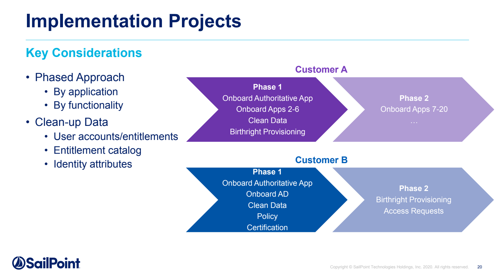
Two foundations apply across implementation projects: break the work into practical phases, and make the identity and access data reliable. An initial phase must include the authoritative information used to create identities, but the number of additional applications and features can be deliberately limited.
The course compares two rollout patterns. One customer starts with an authoritative application plus five business-critical applications and delivers birthright provisioning, then adds more applications in later phases. Another starts with authoritative data and Active Directory, establishes policy and certification controls, and adds provisioning afterward. These are illustrations of phased delivery, not prescribed project sizes.
Data quality affects both governance and automation. Incorrect entitlement data distorts policy findings, risk assessments and role analysis. Incorrect identity attributes can assign access to the wrong people: an employee inaccurately classified as Finance could receive a Finance role through automated logic.
Configuration approaches

Rapid Setup groups common configuration choices into focused menus and supports scenarios such as onboarding and lifecycle handling. Its targeted permissions can let business analysts and data owners participate alongside technical staff. The course describes it as a core-product feature introduced in 8.1 and the preferred framework for the common scenarios it covers.
Standard IdentityIQ configuration provides the broader, more flexible settings used when the Rapid Setup options do not cover a requirement. It remains part of the implementation toolbox rather than a separate replacement product.
Accelerator Pack is the name used in the narration for an earlier extensibility-based approach to similar scenarios. It uses extended attributes and rule hooks and may therefore interact with an organization's other customizations. The supplied slide spells the name “Accelerator Park”; the notes retain the narration's wording while leaving the original illustration untouched. The course says existing implementations can continue using their framework; this is historical course context, not a current migration recommendation.

The class implementation project

Phase 1 creates the identity foundation, organizes people and their IdentityIQ capabilities, loads other account and entitlement data, and checks its quality. The exercises use different implementer and analyst personas to demonstrate shared responsibilities.
Phase 2 introduces compliance functions and roles. Learners detect policy violations, configure a targeted access review and establish an access model that later supports provisioning.
Phase 3 prepares the applications for provisioning and tests both data-driven and user-requested changes. Request configuration includes which access items are requestable, who may request for whom, and which approvals must occur. The results need to be tested rather than inferred from saved settings.
Preparation for Exercise 1

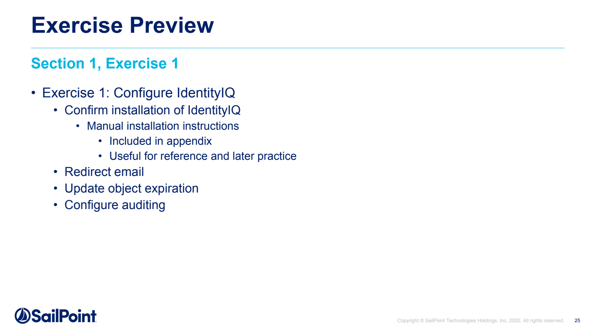
IdentityIQ is already installed in the training environment. Exercise 1 confirms that installation and applies development-oriented global settings: email redirection, work-item archiving, object retention and audit choices. Manual installation practice is a later optional appendix exercise, not a prerequisite operation that was run while creating these notes.
The expanded Exercise 1 study instructions appear after Module 6 below, so the numbered module sequence remains intact.
5. Product Architecture

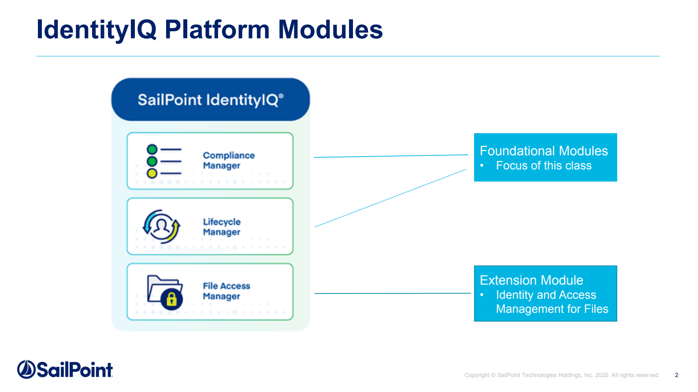
Platform layers and foundational modules
The architecture lesson focuses on Compliance Manager and Lifecycle Manager as foundational application-governance and access-management modules. File Access Manager extends governance into file data. Other introductory material groups the platform differently; these notes retain this lesson's specific framing rather than forcing a single module count across differently scoped presentations.
IdentityIQ is a Java web application running inside an application server with a Java runtime. A relational database persists its objects. An email service provides notifications through SMTP. The architecture separates the application's execution environment from the database and the enterprise applications it manages.
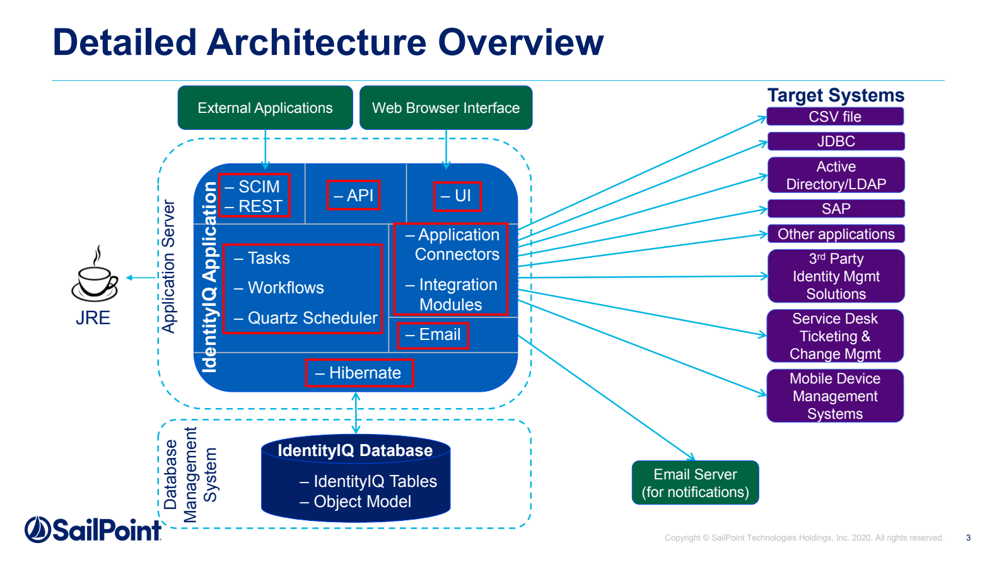
Reading the architecture diagram
Inside the application server, tasks and workflows execute the business logic. Quartz schedules recurring work. Hibernate maps the Java object model to the relational database and handles the database-specific persistence layer.
Connectors and integration modules reach managed systems such as directories, databases, SAP, service-desk products and other applications. Their network access and credentials are dependencies of the operation they perform; having the IdentityIQ website available does not by itself prove those integrations can connect.
The diagram also separates several interfaces:
- Browser UI: the normal interactive experience for administrators and business users.
- External REST interfaces: allow other systems to interact with IdentityIQ, for example to initiate an appropriate process.
- SCIM REST interface: supplies standardized identity-management operations for integrations using that model.
- Internal Java API: provides broader access to IdentityIQ objects and is used by custom rules and implementation code.
The course mentions more than 100 connector types in its narration. That number is preserved as a course-version statement, not a verified count of currently offered connectors.
Platform selection

The slide lists the application servers, databases, Java platforms, cloud-hosting options and browsers associated with the course version. Its general architectural lesson is to select a supported stack the organization can operate and maintain competently. The displayed list includes older products, so it should be read as historical course material rather than a present-day support matrix.
A practical way to review the diagram is to identify the dependency for each operation: browser-to-application access, application-to-database persistence, application-to-target connectivity, and notification delivery. These are different paths and can fail independently.
6. IdentityIQ Installation

Installation sequence and its dependencies
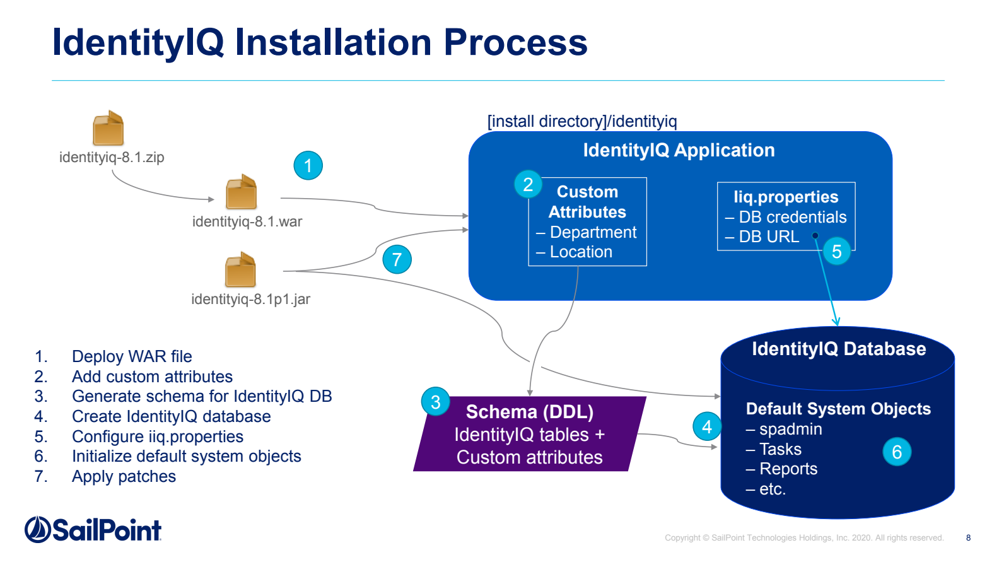
The example assumes the application server and database server already exist. It then shows seven stages:
- Unpack the distribution and deploy its WAR into the application-server environment.
- Define the required implementation-specific extended attributes in the relevant Hibernate mapping files.
- Generate database schema DDL that includes those customizations.
- Create the IdentityIQ database using the appropriate generated script.
- Configure the database connection in
WEB-INF/classes/iiq.properties. - Initialize the supplied system objects, plus Lifecycle Manager objects when applicable.
- Apply the appropriate patch following the version-specific installation instructions.
This sequence explains dependencies: the schema must describe the desired columns before the database is created, and the console needs working database connectivity before it can import objects. The lesson describes patches as cumulative for its example release. No software was installed or patched during the preparation of these notes.
Extended attributes and internal object names

Applications, roles, certification items, identities, accounts and entitlements can have extended attributes. The narration highlights identities as a common example and connects three user-facing terms to internal names: role → Bundle, account → Link, and entitlement → ManagedAttribute.
A non-searchable extended attribute is stored within the object's attribute data, described here as a CLOB, or character large object. Multiple attribute values can share that storage. A searchable attribute has its own database column, making it suitable for efficient filtering, correlation and repeatedly accessed report or rule criteria.
The narration explains that selecting Searchable affects storage and availability in features such as Advanced Analytics. Accessing data in a CLOB remains possible, but it may be inefficient for repeated searches. Searchability is therefore both a functional and a database-design consideration.
Standard, named and placeholder columns


Standard columns are supplied by IdentityIQ. Named extended columns are added for requirements whose attribute names are known, such as department or location. Placeholder columns, such as extended1, reserve space for later searchable attributes whose names were not known when the database was designed.
The course describes a limit of 20 placeholder columns per object for its version. Named columns are still constrained by the database and implementation design; they are not literally unlimited. Indexes can improve searches while adding work to updates, so indexing is a deliberate design choice.
Relevant Hibernate mapping files, such as IdentityExtended.hbm.xml, define the additional columns and optional indexes. Adding an attribute through a screen does not eliminate the need for appropriate storage in the database schema.
Generating and applying the schema


The lesson uses WEB-INF/bin/iiq schema to generate DDL scripts in WEB-INF/database. The generated scripts cover the supported database types of that release; choose the one for the actual database engine.
The narration distinguishes the generated customized creation script from the similarly named default script distributed with the product. Using the wrong one can omit the extended columns. In its MySQL example, the database administrator runs the selected DDL through the database console to create the database structures.
How a searchable attribute gets a column

When a searchable attribute is configured, IdentityIQ first looks for a matching named column. If one exists, it uses that column. Otherwise, it assigns an available placeholder and records that association. If neither is available, configuration fails and the schema needs to be extended before another searchable attribute can be added.
A useful example is Department. A named department column supplies dedicated storage; without that column, an unused placeholder can hold its values. Merely choosing Searchable cannot create limitless additional storage.
Extending an existing database
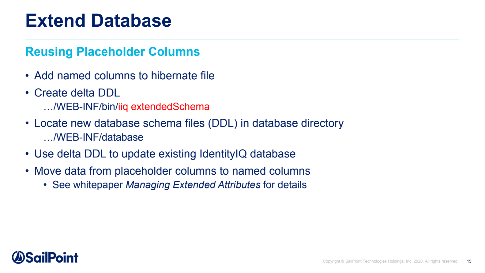
The course describes reclaiming placeholder capacity by defining named columns for known attributes, generating delta DDL with iiq extendedSchema, applying the schema changes, and moving the existing data into its intended columns. This is different from rerunning a full create-database script.
The narration points to a separate Managing Extended Attributes reference for the detailed migration procedure. That external document has not been captured or verified in this batch. The notes explain the process, but do not supply an unverified production migration recipe.
Properties and initial objects

iiq.properties identifies the database endpoint, username, password, driver and dialect. The lesson's example shows an encrypted password generated through the IdentityIQ encryption utility and explains enabling the block for the chosen database type while disabling irrelevant examples. Connection strings and example settings on the original slide are historical training material.

The IdentityIQ Console imports init.xml to create the standard objects, including the initial administrative identity and default configurations, tasks, rules, reports and workflows. If Lifecycle Manager is included, init-lcm.xml adds its objects. XML imports are also a mechanism for bringing in implementation-specific object definitions.
The console does not require the web application server to be running, but it does require its database connection to work. A successful console startup therefore provides an early connectivity check. Browser access additionally requires the application server and deployed web application to be available.

Player-label discrepancy: Module 6's embedded player displayed “Product Architecture” as its heading, while its navigation title and caption text describe IdentityIQ Installation. The notes follow the verified module navigation and actual narration.
Related Exercise 1.1: Configure IdentityIQ
This section rewrites the relevant instructions from exercise-guide PDF pages 9–17. These are study instructions for the supplied training VM, not actions performed on a live IdentityIQ deployment. The original pages are included for their screenshots and precise training context.
1. Confirm the installed version
Open the VM's IIQ Console shortcut, or open a terminal in the training installation's WEB-INF/bin directory and run ./iiq console -j. The guide says -j enables command-history navigation. At the prompt, use about to inspect the version, patch and build, then quit to exit.
The exercise starts from the preinstalled environment. It does not require deleting the database or performing a manual installation first.

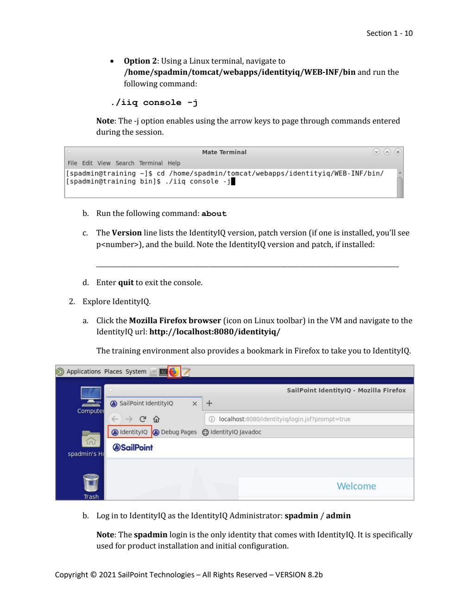
2. Explore the browser interface
Use the VM's IdentityIQ bookmark or the training URL and the credentials provided for that training environment. Explore the administrator's menus, Quicklink cards and dashboard widgets. The exercise asks the learner to identify the available menus and identity sections; these notes leave those checks for the learner rather than supplying an answer key.
Review the Quicklink categories for assigned work, access management and identity management. Open Identities → Identity Warehouse, then inspect the initial administrator's Identity Cube and its Application Accounts section. The gear menu provides product settings, help opens documentation, the notification indicator leads to assigned work, and the user menu includes preferences and logout.

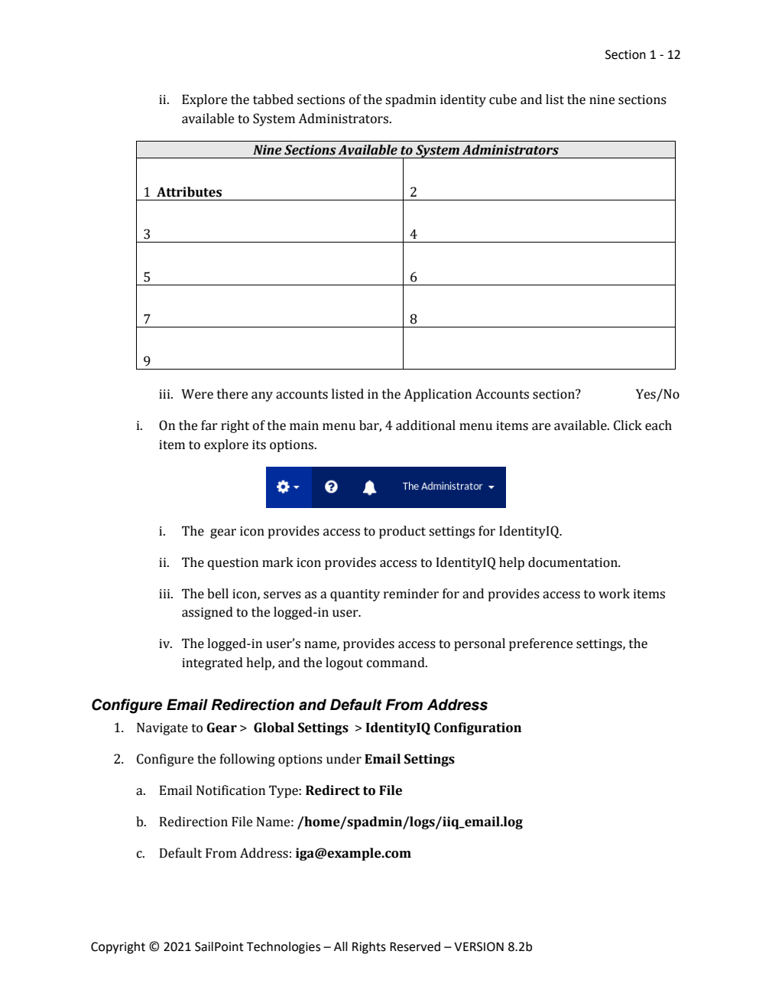
3. Redirect training emails to a file
In Gear → Global Settings → IdentityIQ Configuration → Email Settings, the guide uses Redirect to File, with /home/spadmin/logs/iiq_email.log as the file and iga@example.com as the default sender. The purpose is to inspect generated notifications during development without delivering messages to real users. The same configuration area also contains email-template and SMTP-related settings.
4. Archive completed work items
Under Work Items, the exercise selects Approval, Form and Manual Action as work-item types to archive. A work item is an assigned unit of work; archiving preserves a historical representation after completion. The guide notes that multi-selection can depend on keyboard behavior in the hosted VM.
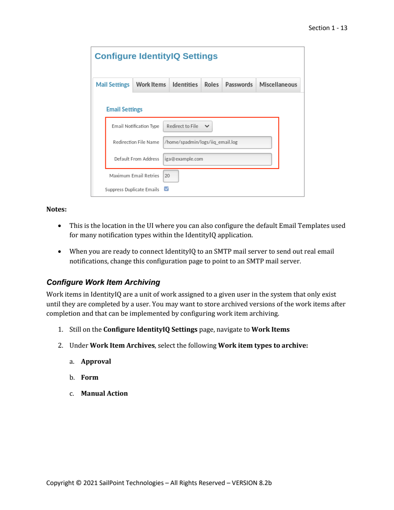
5. Configure training retention and transaction logging
Under Miscellaneous, the guide uses the following values for its exercise:
| Training configuration | Value |
| Snapshot deletion | 365 days |
| Task-result deletion | 90 days |
| Certification archiving | 720 days |
| Certification archive deletion | 1080 days |
| Syslog-event deletion | 30 days |
| Provisioning transaction maximum log level | Success |
| Provisioning transaction-event deletion | 90 days |
These are exercise values, not general retention recommendations. The guide specifically says Success is selected for training and mentions Retry or Failure as typical production logging choices in its context. Retention needs to reflect the deployment's own history and operational requirements. Save the configuration after reviewing the complete page.
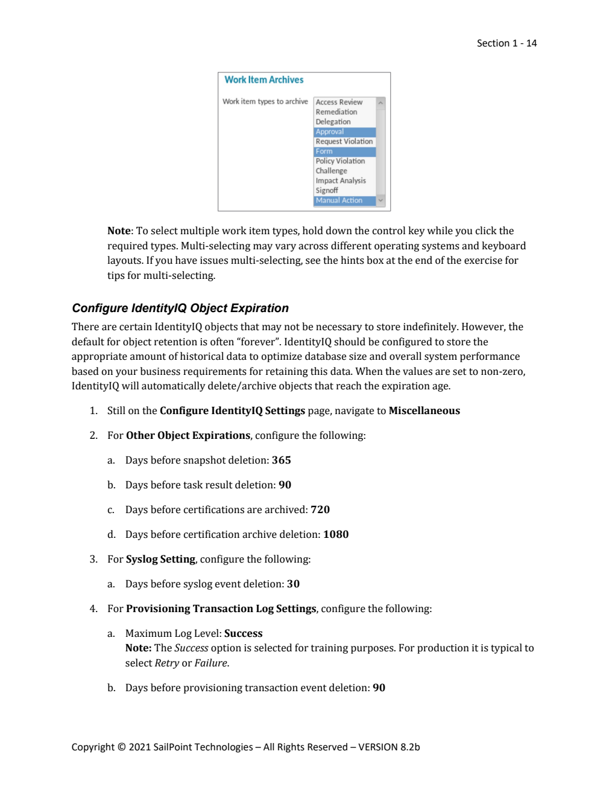
6. Review and test audit configuration
Navigate to Gear → Global Settings → Audit Configuration. The guide reviews default actions such as lifecycle events, incorrect challenge-question answers and the start of an access request. It then has the learner enable Login Failure, Import File and Email Sent auditing, review the other available tabs and save.
The validation sequence is to sign out, make a deliberately unsuccessful login in the training VM, sign back in correctly, and search Intelligence → Advanced Analytics → Audit. Sorting by newest date should let the learner locate the failed-login event. This links configuration to observable evidence rather than treating the checkbox as the entire test.
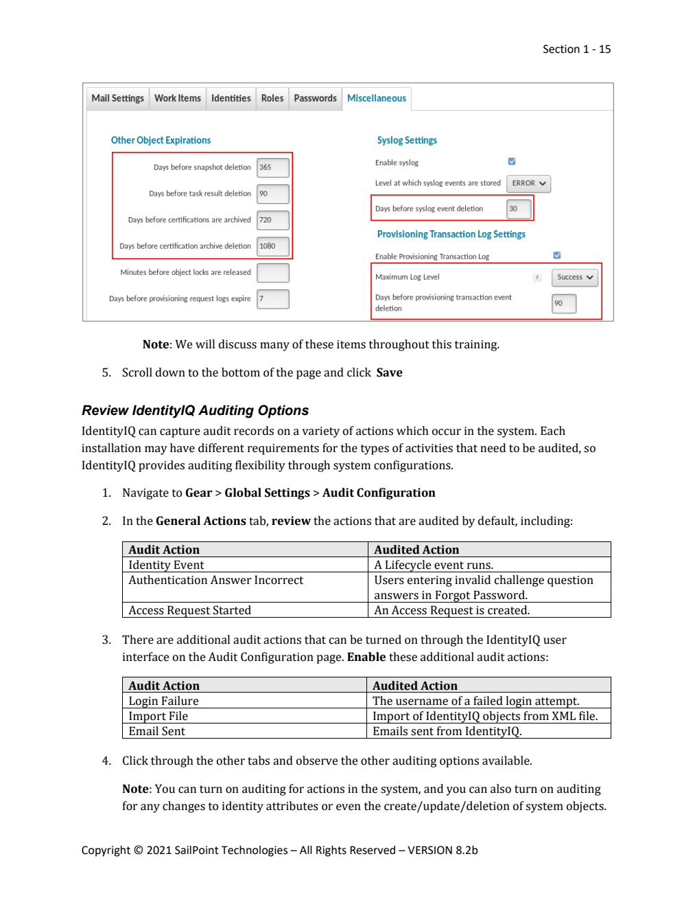

For hosted-VM multi-selection difficulties, the guide describes using the VM's on-screen keyboard to hold Ctrl, making the selections, then releasing Ctrl and closing the keyboard.

Coverage and remaining work
Modules 1–6 have substantive paraphrased notes based on caption-search results, with original handout illustrations for Modules 2–6. The illustrations are rendered PDF pages, not extracted video frames; they preserve the English labels, diagrams, screen examples and icons present on those pages. Forty nonblank presentation pages and nine exercise-guide pages are included in the reading flow. Five blank presentation separator pages are omitted from that flow but remain in the saved original PDF.
The available caption-search text contains some duplicate lines and RTF markers; those artifacts were removed when rewriting. Search results do not prove word-perfect completeness of a video transcript, and captions may omit animation-only or uncaptained content. Full video files, embedded knowledge-check interactions and every changing video frame have not been archived. No assessment answers were submitted, and the Answer Key handout was not used.
Modules 7–33 remain pending: Creating Identity Cubes; Identity Attributes and Mappings; Authentication and Authorization; Organizing Identities; Onboarding Additional Applications; Account Correlation; IdentityIQ Connectors; Data Oversight; System Oversight; Logging; Troubleshooting; Introduction to Policies; Introduction to Certification; Introduction to Roles; Provisioning Overview; Monitoring Provisioning; Rapid Setup Lifecycle Events; Lifecycle Event Configuration; Lifecycle Manager Requests; Manage User Access; Additional Access Request Options; Other Lifecycle Manager Requests; Automated Provisioning; Other Provisioning Requests; System Architecture and Deployment; Deployment Process Management; Getting Help.
The separate Accessing the Virtual Machine PDF, My lab interface, remaining exercise instructions and appendix procedures have not yet been incorporated into the notes. Start Here contained a heading and an empty content paragraph in the inspected state. Visiting it caused the LMS to show a completed status; that automatic reading status does not mean its videos, exercises or the whole course were completed. The platform's assessment, rating form and closing page are not represented as completed study modules.